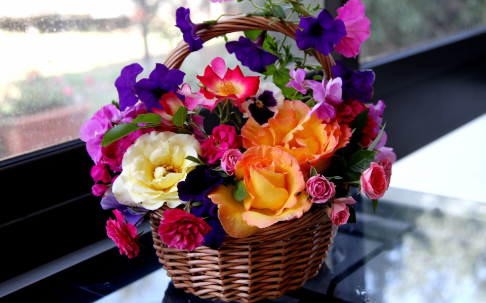
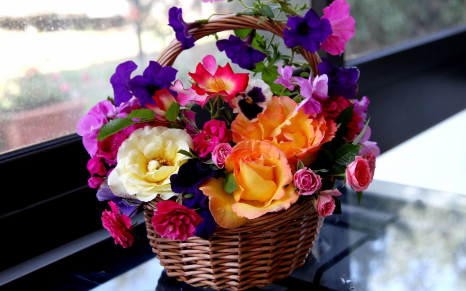
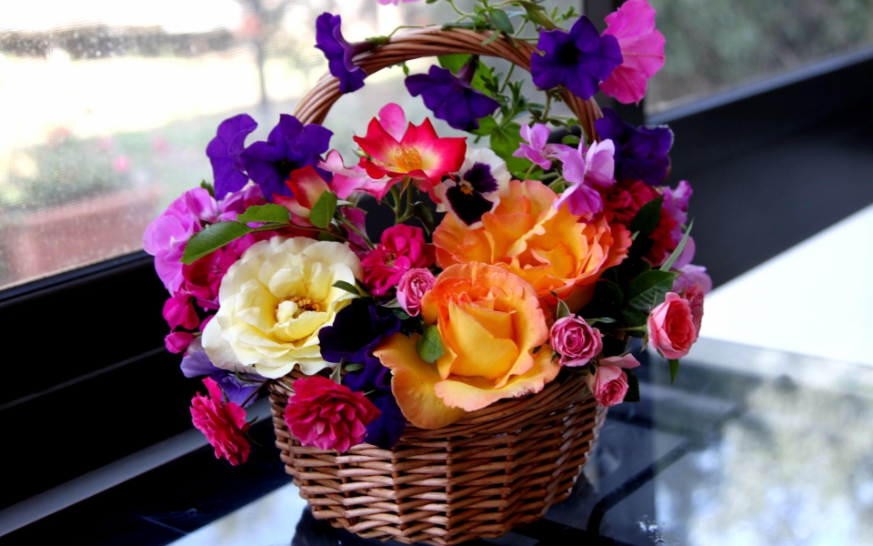

Комнатные растения украшают квартиру, способствуют созданию благоприятного микроклимата и настроения. Конечно, не стоит превращать жилую комнату в оранжерею. Прежде всего не следует загромождать окно разросшимся фикусом или многоярусными полочками с горшками цветов. На подоконниках хороши невысокие растения — кактусы, фиалки, занимающие не более 10—15 % оконного проема. А фикус, пальму, лавр и другие высокие растения лучше всего поставить на низкие скамеечки или специальные подставки.
Польза цветов многие комнатные растения обладают способностью повышать влажность воздуха в помещениях, а это чрезвычайно важно и ценно, так как в отопительный сезон влажность воздуха в городских квартирах заметно снижается. Количество углекислого газа в помещении, где есть цветы, не повышается, так как ночью растения выделяют его во много раз меньше, чем поглощают днем. Подсчитано, что несколько сот комнатных растений выделяют за ночь примерно столько же углекислого газа, сколько один человек.
